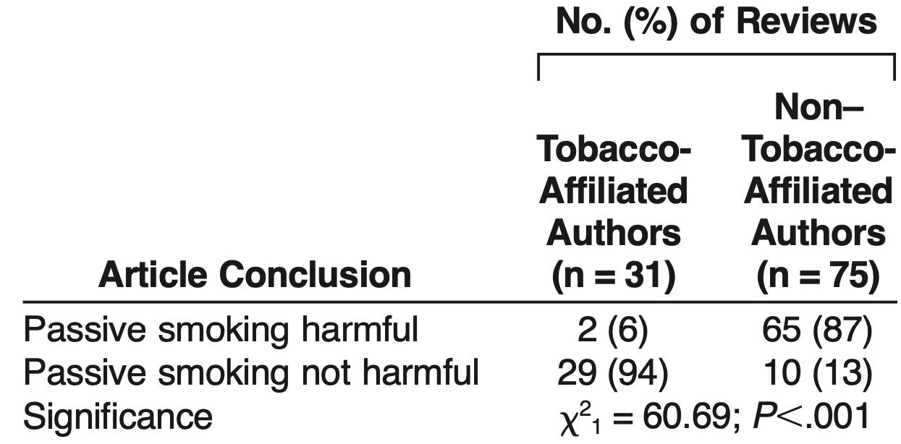

Defending Secondhand Smoke (Backup)

Preparation
- If you have not done so already, read the blog page Manufacturing Uncertainty and Product Defense, in particular, the quotes from Stephen Bocking's Skewing Science and the overview of our class discussion.
- Read the first 3 paragraphs (pp. 269-70) of Infante, P. F. (2016). The continuing struggle between career civil servants and political appointees in the development of government public health standards. International Journal of Occupational and Environmental Health, 22(4), 269-273. [HTML]
- Watch the 1996 "60 Minutes Rewind" episode on the big tobacco whistleblower Jefferey Wigan (see below) [30 min.]
- Read "Defending Secondhand Smoke," which is Chapter 7 (pp 79-90) of Doubt Is Their Product : How Industry's Assault on Science Threatens Your Health by David Michaels. Oxford University Press, Incorporated, 2008. [SWEM Online]
Discussion
The Funding Effect
The manipulation and selective publication of data by Big Tobacco’s scientists resulted in a distortion of the literature now widely known as the ‘‘funding effect,’’ a term used to describe the close correlation between the results desired by a study’s sponsors and the results reported. (Michaels, p. 86)
... However, skewed literature reviews would never be enough to win the day, certainly not when the issue is cigarette smoke. The results of some studies are simply too powerful to explain away with sleight of hand; they must be attacked head on. This is where data reanalysis comes in. In all valid studies, the methods must be selected before any data are analyzed; post hoc reanalyses are clearly susceptible to mercenary manipulation since after-the-fact researchers can change the parameters of the study to yield the preferred new outcome. (Michaels, p. 86)
Regulation and Defense of Secondhand Smoke is Ongoing
Where does everything stand today? [2008] The Federal Trade Commission has mandated advertising restrictions, the Federal Aviation Agency has outlawed smoking on commercial airliners, and federal contracts now require a smoke-free workplace, a strong incentive for many employers to ban workplace smoking. Cigarettes are taxed at the federal and state level—a type of regulation (and the main one, in the case of smoking, according to some observers). Otherwise, OSHA has backed off, the EPA has backed off, and Congress has yet to give the FDA jurisdiction over cigarettes. The most important changes in the regulation of tobacco have occurred in the states and localities, many of which have indeed passed restrictions on indoor smoking that leave people standing in the rain outside office buildings smoking their cigarettes. After decreasing for eight years, the percentage of American adults who smoke appears to have leveled at about 21 percent (MMWR Morb Mortal Wkly Rep 2006); cigarettes are still responsible for more than four hundred thousand deaths each year and cost approximately $157 billion in annual health-related economic losses (The Health Consequences of Smoking: A Report of the Surgeon General, 2004). In some parts of the country, like California, the prevalence of smoking continues to decrease, which suggests that well-funded antismoking programs can further reduce smoking rates and save more lives. (p. 90)
Recent reports on tobacco use and health consequences of smoking:
Cornelius, M. E., Wang, T. W., Jamal, A., Loretan, C. G., & Neff, L. J. (2020). Tobacco product use among adults—United States, 2019. Morbidity and Mortality Weekly Report, 69(46), 1736.
US Department of Health and Human Services. (2014). The Health Consequences of Smoking—50 Years of Progress: A Report of the Surgeon General.
Further Reading
David Michaels (2008). Doubt Is Their Product : How Industry's Assault on Science Threatens Your Health. Oxford University Press, Incorporated, 2008. [SWEM Online]